Relay Documentation
Introduction
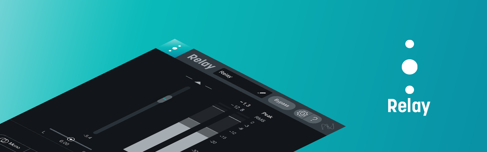
Relay is a utility plug-in that allows you to send audio information to Inter Plug-in Communication (IPC) compatible iZotope plug-ins.
Controls and Meters
Overview
Relay includes Peak+RMS level meters (with support for up to 7.1.2 Dolby Atmos surround configurations), output gain, stereo balance, and stereo width controls. Relay also features an advanced controls panel that includes channel operations processing options (Phase, Swap, Mono), channel delay controls, and an adjustable high-pass filter.
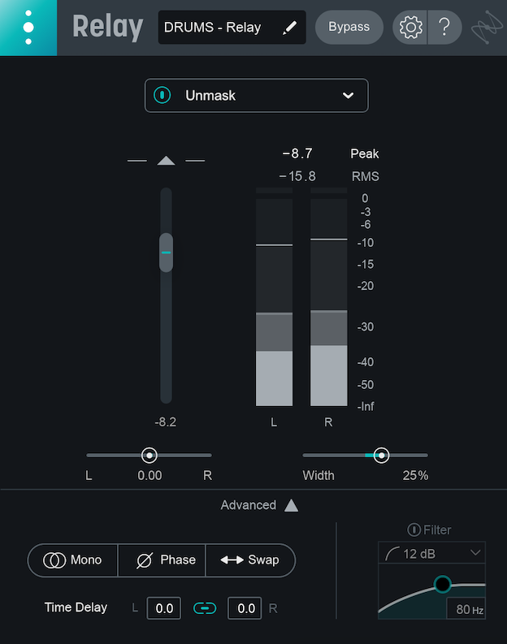
Header Controls
The following controls are available in the header area of the Relay plug-in.
Plug-in Name Display
Displays the name of the current Relay instance. In some DAWs and NLEs, this name will be automatically set to the name of the track Relay is inserted on. This name will appear in source selection lists of compatible iZotope plug-ins. Click on the pencil icon or directly on the text to modify the name.
Bypass
Disables/enables Relay processing.
Options
Opens the options menu panel.
More information
Learn more about the Relay options menu in the Options chapter.
Help
Opens the Relay help documentation.

Controls
The following controls are available in the main panel of the Relay plug-in.
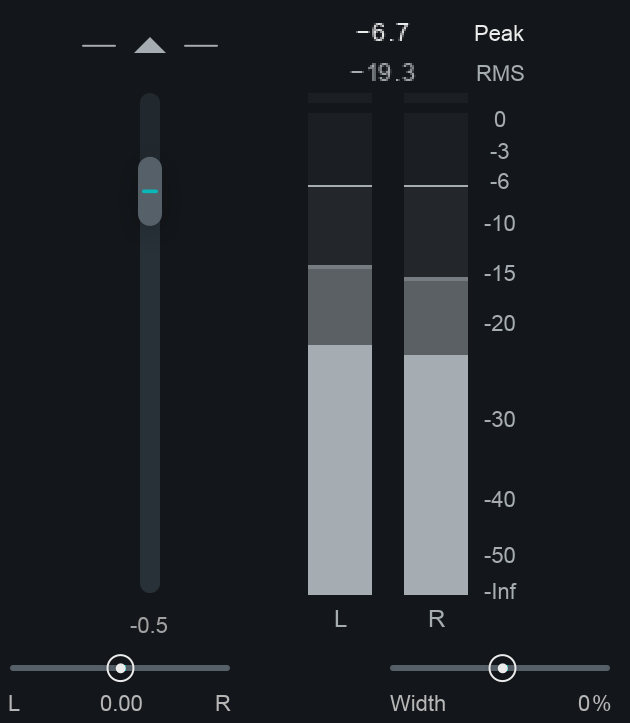
Output Gain
Adjusts the output gain of Relay. Output gain adjustments apply to all channels equally.
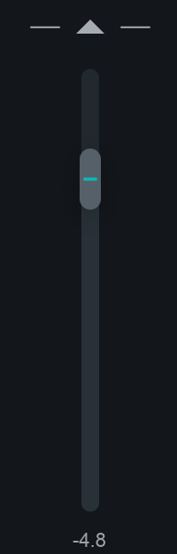
Width
Adjusts the amount of stereo widening applied to the output signal. Negative values result in a narrowing effect (-100% is equivalent to mono), positive values will increase the apparent stereo field. Only functional in stereo instances of Relay.
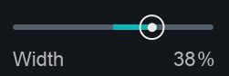
Pan
Adjusts the level of the left and right channels to affect the stereo balance of the signal. Only functional in stereo instances of Relay.
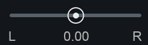
Meters
Relay can be inserted on mono, stereo, or surround tracks. The meters display Peak+RMS level information for each channel. The text readouts above the clip indicators display current peak (top readout) and RMS (bottom readout) values of a given channel. Clicking on the clip indicators will clear them.
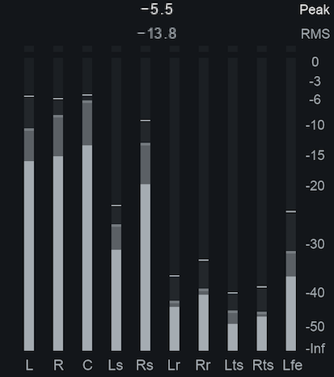
Advanced Controls
You can click on the Advanced button located in the bottom of the interface to show the advanced controls panel.
The advanced controls panel includes the following features:
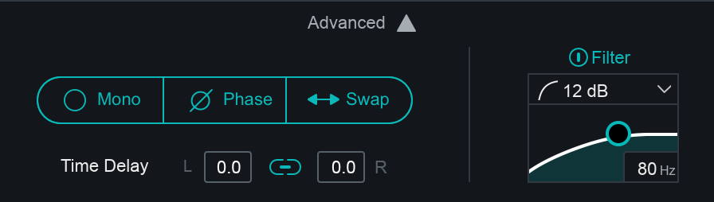
Mono
Sums the left and right channels to a mono output signal. Useful for testing mono compatibility. Only available in stereo instances of Relay.
Phase
Inverts the polarity of the input signal. Only available in stereo instances of Relay.
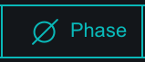
Swap
Swaps the left and right input channel outputs. Only available in stereo instances of Relay.
Time Delay
Adjusts the delay for the left or right channel. When link is enabled, values will be modified relative to each other. Double-click on the text readouts to enter values manually. Only available in stereo instances of Relay.
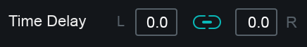
High Pass Filter
A high-pass filter (HPF) allows you to filter out frequency content below a specified cutoff frequency. The following section describes the high-pass filter controls included in the advanced panel.
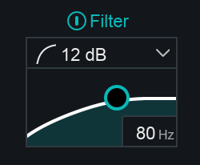
Enable
Enable the high-pass filter by clicking on the power button above the small filter display.
Slope
Determines the degree of attentuation applied to frequencies below the cutoff. Change the slope of the high-pass filter by selecting a value from the dropdown menu.
The following Slope values are available in the High-pass filter:
- 12 dB
- 24 dB
- 48 dB
Cutoff Frequency
Determines the cutoff frequency of the filter. Click and drag the node or double-click on the text readout in the bottom right hand corner of the filter display to modify the cutoff.
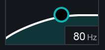
Inter Plug-in Communication
Table of Contents
Overview
Relay can send metering data to, or receive information from, select Inter Plug-in Communication (“IPC”) compatible iZotope plug-ins. The following sections offer examples of how you can use Relay with other IPC compatible iZotope plug-ins.
Relay and Insight
Relay can send metering data to the Spectrogram and Intelligibility meters in Insight.
Insight Spectrogram meter
Up to eight Relay instances can be displayed at once in the Spectrogram meter panel in Insight.
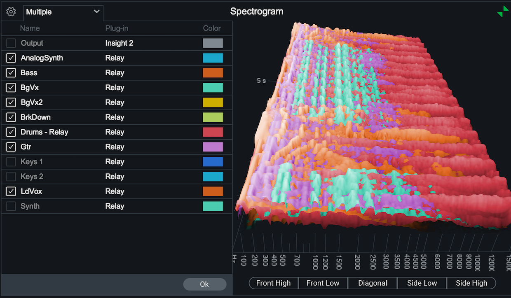
Insight Intelligibility meter
Relay instances can be selected as a source in the Intelligibility meter panel in Insight.
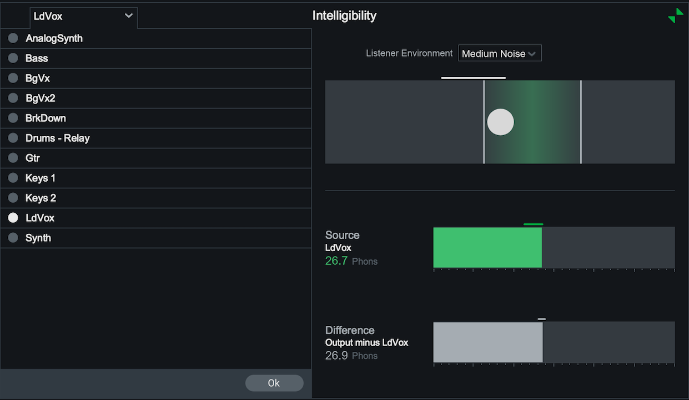
Relay and Tonal Balance Control
Relay can be selected as a source in the Tonal Balance Control plug-in.
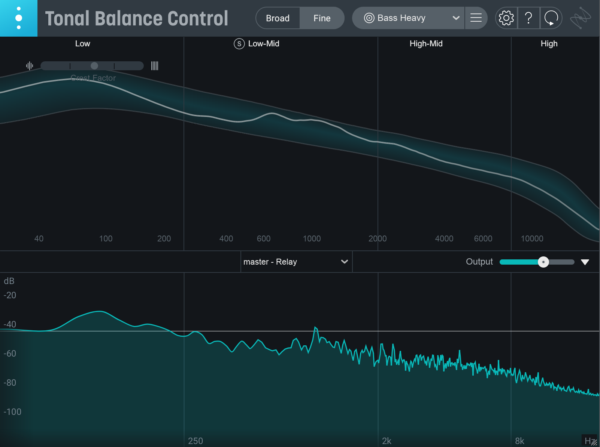
Relay and Neutron
You can use Relay as a source in the Visual Mixer, EQ Masking Meter, and Balance Assistant.
Neutron Masking Meter
Relay can be selected as a source in the Masking Meter feature in the Neutron (EQ module), or in the Neutron Equalizer component plug-in.
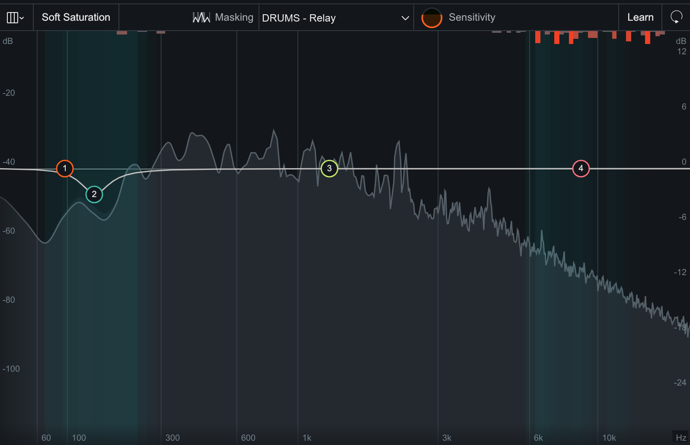
Neutron Visual Mixer
Relay controls can be remotely modified in the Neutron Visual Mixer plug-in. Moving a Relay node up or down in the Visual Mixer will adjust the gain slider in the remote instance. Moving a Relay node left or right in the Visual Mixer will adjust the pan control in the remote instance (stereo Relay instances only). Dragging Relay node handles in the Visual mixer will adjust the width parameter in the remote instance (stereo Relay instances only).
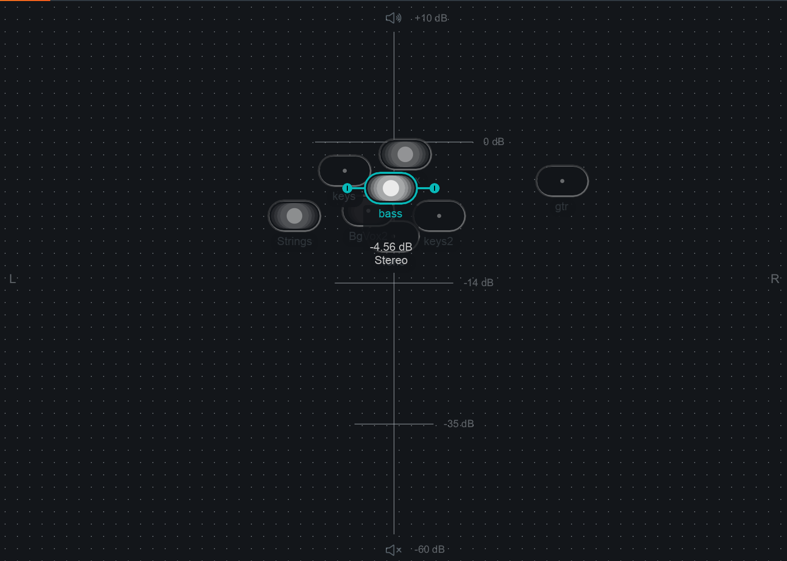
Neutron Balance Assistant
Relay instances can be selected as a mix focus for the Balance Assistant feature in Neutron.
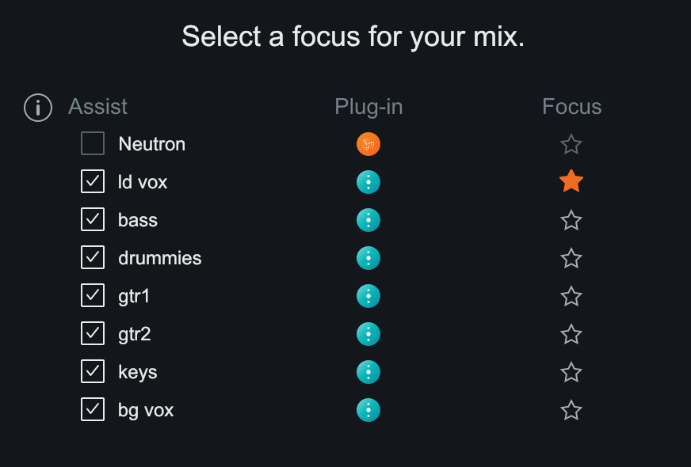
Relay and Nectar
Relay can be used as an Unmask source in Nectar Vocal Assistant. When masking is detected between the Nectar instance and the Relay instance, an EQ curve will be applied to the Relay instance in order to reduce masking of the vocal track. When the EQ curve is active, Relay will display the track name it is unmasking. The EQ curve can be disabled by clicking the “Unmask” power button in the Relay interface.
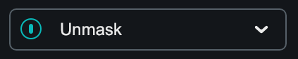
Nectar Unmask Controls
Additional controls become available in the Unmask section of Relay when you are connected to an instance of Nectar Plus or Nectar Pro.
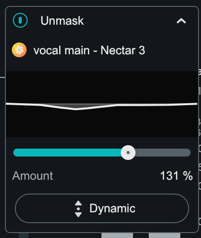
You can learn more about these additional unmask controls in the Vocal Assistant chapter of the Nectar help documentation.
Options
General
- Show Tooltips: Enables/disables the display of tooltip text.
- Send anonymous usage data: Enables sending of anonymous usage data to iZotope to help improve Relay.
Updates
- Download Product Portal: To stay up to date with new versions of Relay, download the iZotope Product Portal application.
- Check for Updates: Manually check for available updates. Clicking this button will open the Product Portal application and check for updates.
- Download Update: If an update is available, a small blue dot will appear. Clicking the Download Update button in the options window will launch the Product Portal application and display the Updates page.
Authorization
This section displays information about the current authorization.
- Current Authorization Status Text: Displays the current Relay authorization state.
- Authorize: Opens the iZotope Authorization wizard.
- Remove Authorization: Removes the current authorization.
Authorization
Overview
The iZotope Authorization window will appear the first time that you open Relay in your DAW or NLE.
The Authorization window allows you to:
- TRIAL: Start or continue a Trial period evaluation prior to purchasing.
- DEMO: Continue evaluating the product with Demo limitations (after the Trial period has ended).
- AUTHORIZE: Authorize the product with a serial number.
Trial Mode
Trial mode allows you to evaluate Relay over a 10 day trial period. The trial period begins when you first open Relay in a DAW or NLE. The Authorization window will display the number of days remaining in your trial period. Click the Continue button to exit the Authorization window.
Demo Mode
If ‘Demo’ is chosen in the Authorization window, Relay will operate in demo mode and periodically output silence.
Authorizing Relay
We offer three methods for authorizing Relay:
- Online Authorization: Use this method to authorize Relay on a machine that is connected to the internet.
- Offline Authorization: Use this method to authorize Relay on a machine that is not connected to the internet.
- For additional help with authorizing Relay:
- Check out the Customer Care pages on the iZotope website: support.izotope.com
- Contact our Customer Care department at support@izotope.com
- More information on iZotope’s Customer Care department and policies can be found in the Customer Care chapter.
Customer Care
iZotope Customer Care Policy
iZotope is happy to provide professional technical Customer Care to all registered users absolutely free of charge. Contact iZotope Customer Care
We also offer valuable pre-sales technical Customer Care to customers who may be interested in purchasing an iZotope product. Before contacting iZotope Customer Care, you can search our Product Knowledgebase to see if the solution to your problem has already been published.
How long does iZotope provide customer support for purchased products
You can email us with any question for 12 months after you buy any iZotope product. Past 12 months, we’ll still help you with your account and authorization but will not provide technical support for in-depth product questions. If you need more detailed help on how to use the product, please check out our FAQs and Tutorials.
How long does iZotope support its products
Although we can’t guarantee it, we do our best to keep our products up to date with the operating systems and plug-in hosts that we support. Sometimes, other companies make changes that we’re not able to support, but we actively work with other companies to avoid these sorts of compatibility problems. We also do our best to address bug fixes within the product itself to ensure our products operate in accordance with our specifications.
We will provide software updates for 12 months from product release. After 12 months, no software updates will be provided.
For details on what operating systems and plug-in host software are officially supported for a product, please check that product’s specs page.
Contacting iZotope Customer Care
For additional help with Relay:
- Check out the Customer Care pages on our website at support.izotope.com
- Contact our Customer Care department at support@izotope.com
iZotope’s highly trained Customer Care team is committed to responding to all requests within one (1) business day and frequently respond faster. Please try to explain your problem with as much detail and clarity as possible. This will ensure our ability to solve your problem accurately, the first time around. Please include all system specs and the build/version of Relay that you are using.
Once your Customer Care request is submitted, you will receive a confirmation email from iZotope Customer Care. If you do not receive this email within a few minutes, please check your spam folder and make sure our responses are not getting blocked. To prevent this from happening please add support@izotope.com to your list of allowed email addresses.
International Distribution
Customer Care is also available from our international distributors worldwide for any customers who purchased their iZotope products through a certified iZotope distributor.
Check with your local distributor for availability. If you would like help locating your local distributor please contact iZotope Customer Care.
Thanks for using Relay!
-The iZotope Team
EULA
End User License Agreement
READ CAREFULLY THE TERMS AND CONDITIONS OF THIS END USER LICENSE AGREEMENT (“AGREEMENT”) BEFORE YOU CLICK ON THE “ACCEPT” BUTTON OR OTHERWISE DOWNLOAD, INSTALL OR USE THE PRODUCT. DOING SO AND/OR USING THE LICENSED SOFTWARE OR ANY TECHNOLOGY, IDEA, DATA AND DATABASES, ALGORITHMS, PRESETS, INFORMATION OR DOCUMENTATION CONTAINED THEREIN OR PROVIDED THEREWITH (COLLECTIVELY, THE “SOFTWARE”) ESTABLISHES A BINDING AGREEMENT BETWEEN YOU AS THE PERSON LICENSING THE SOFTWARE, EITHER ON BEHALF OF YOURSELF AS AN INDIVIDUAL OR OF ANY THIRD-PARTY ENTITY (“YOU” OR “LICENSEE”) AND IZOTOPE, INC. (“IZOTOPE”). YOU (WHETHER AN INDIVIDUAL OR DULY AUTHORIZED REPRESENTATIVE OF A LEGAL ENTITY) WARRANT AND AGREE THAT YOU HAVE THE LEGAL CAPACITY AND AUTHORITY TO ENTER INTO A BINDING AGREEMENT, THAT YOU SHALL ADHERE TO THE TERMS AND CONDITIONS SET FORTH IN THIS AGREEMENT, AND THAT YOU SHALL USE THE SOFTWARE ONLY IN ACCORDANCE WITH THIS AGREEMENT AND WITH ALL APPLICABLE LAWS.
-
General Terms. If You purchase the Software on a subscription basis, either monthly or annual, your use of the Software is further governed by iZotope’s Subscription Terms and Conditions (“Subscription Terms” https://www.izotope.com/subscription-terms), which terms are incorporated herein by this reference. In the event of any conflict between this Agreement and the Subscription Terms, the Subscription Terms shall take precedence for subscribers; provided, however, that, with respect to the download, installation and use of the Software by any user, this Agreement, and the Subscription Terms as applicable, shall take precedence over any other agreement between You and iZotope, including but not limited to purchase order or procurement terms and conditions.
-
License Grant. Subject to the terms and conditions of this Agreement, iZotope hereby grants to You, the Licensee, a non-exclusive license to use the Software accompanying this Agreement whether in printed, “online” or electronic form, either on a stand-alone computer or on a network, on any one computer at any one time. If more than one user will be using the Software at any one time, You must obtain from iZotope an additional license (or licenses, as applicable) for each additional concurrent user of the Software. The Software is “in use” on a computer when loaded into memory (RAM). You may make one copy of the Software solely for backup or archival purposes if all copyright and other notices are reproduced on that copy, or You may copy the Software to a single hard disk provided that You keep the original solely for backup or archival purposes. If the Software is an upgrade, You must have a license for the Software from which it is upgraded. If You receive the Software in more than one media, that does not affect the number of licenses You are receiving or any other term of this Agreement.
-
Restrictions on Use. You may not modify, adapt, decompile, disassemble or otherwise reverse engineer the Software, except to the extent this restriction is expressly prohibited by applicable law, nor may You create derivative works based upon the Software, or permit third parties to do so. You may not loan, rent, lease or license the Software, or use the Software as a service bureau, as an application service provider, to perform consulting or training services for a third party or in any commercial time share arrangement, but You may permanently transfer your rights under this Agreement provided that You transfer this Agreement, the Software, and all accompanying printed materials and retain no copies, and the recipient agrees to the terms of this Agreement. Any such transfer must include the most recent update and all prior versions.
-
Intellectual Property Ownership. The copyrights, patents, trade secrets, trademarks, and all other intellectual property rights in the Software (including any images, photographs, animations, video, audio, music and text incorporated therein or provided therewith) are owned by iZotope or its licensors and are protected by the copyright, trademark, patent and other intellectual property laws of the United States and other countries, as well as by international treaty provisions. iZotope retains all rights not expressly granted in this Agreement. You shall not remove any product identification, trademark, copyright or other notices contained in or provided with the Software.
-
Feedback. iZotope shall have a royalty-free, worldwide, transferable, sublicenseable, irrevocable, perpetual license to use or incorporate into the Software any suggestions, ideas, enhancement requests, feedback, recommendations or other information provided by You relating to the features, functionality or operation of the Software (“Feedback”); provided, however, that iZotope shall have no obligation to use or incorporate into the Software any Feedback, and You shall have no obligation to provide Feedback.
-
Registration Information. When You activate the Software, iZotope may collect your name and email address and other contact information that You choose to provide (“Registration Information”). You agree that iZotope may use this Registration Information to contact You regarding your purchase and to deliver notifications relative to your use of the Software. iZotope does not collect or retain any financial information from or about You (such as payment card information).
-
Usage Information. When You activate and/or use the Software, iZotope may collect certain information about your computer or mobile device and your interaction with the Software via the internet (“Usage Information”). iZotope analyzes this Usage Information for purposes of improving the Software, as well as to provide You with a more relevant user experience. Usage Information is generally collected in the aggregate form, without identifying any user individually, although IP addresses, computer and session ids in relation to purchases and downloads/installations of the Software may be tracked as part of iZotope’s customer order review, statistical analysis, and fraud and piracy prevention efforts. iZotope may send this Usage Information to a web or third-party cloud server for storage or further processing by iZotope and/or its partners, subsidiaries or affiliates, including, but not limited to, Google Analytics https://marketingplatform.google.com/about/analytics/terms/us/ and Mixpanel https://mixpanel.com/legal/terms-of-use/, in accordance with such third party’s terms of service. The Software allows You the choice to opt in and share your Usage Information or to opt out, if You do not wish to provide iZotope with such Usage Information. For instructions on how to change your selection relative to the sharing of Usage Information, which You may do at any time, please visit: https://www.izotope.com/en/analytics-opt-in.html.
-
Privacy. iZotope’s collection and use of Registration and Usage Information is as provided in iZotope’s Privacy Policy, located at https://www.izotope.com/en/privacy-policy.html, which forms a part of this Agreement and to which you agree by means of your download, installation and use of the Software.
-
Support. Subject to the limited warranty stated herein, and further subject to your not being in violation of any term or condition of this Agreement, iZotope shall provide technical support and bug fixes, exclusive of any upgrades or new features, for the Software to the original purchaser for a period of twelve (12) months from the original purchase date and from the release date, respectively. Where your use of the Software is on a subscription basis, support shall be as provided for in the Subscription Terms. For support resources and assistance, please visit: https://www.support.izotope.com/hc/en-us.
-
Limited Warranty. iZotope warrants that, for a period of thirty (30) days from the date the Software is made available to You for download, the Software shall substantially conform to the applicable user documentation provided with the Software. Any implied warranties that may exist despite the disclaimer herein shall be limited to thirty (30) days (“Warranty Period”). This limited warranty is void if You buy from an unauthorized reseller, You violate any term or condition of this Agreement, or if the failure of the Software is due to accident, abuse or misapplication.
-
Your Remedies. iZotope’s sole obligation and your exclusive remedy for any breach of warranty shall be, at iZotope’s sole option, either the return of the purchase price that You paid for the Software or the repair or replacement of the Software, media and documentation; provided, however, that, in all instances, You return the Software, together with all media and documentation and a copy of your receipt, to the location where You obtained it during the Warranty Period. Outside the United States, neither these remedies nor any support services are available without proof of purchase from an authorized non-US source.
-
Disclaimer. THE SOFTWARE IS PROVIDED “AS IS.” TO THE MAXIMUM EXTENT PERMITTED BY APPLICABLE LAW, EXCEPT FOR THE EXPRESS WARRANTY SET FORTH HEREIN, IZOTOPE DISCLAIMS ALL OTHER WARRANTIES, EXPRESS OR IMPLIED, INCLUDING BUT NOT LIMITED TO THE IMPLIED WARRANTIES OF NON-INFRINGEMENT, MERCHANTABILITY AND FITNESS FOR A PARTICULAR PURPOSE. IZOTOPE DOES NOT WARRANT THAT THE SOFTWARE WILL MEET YOUR REQUIREMENTS OR THAT THE SOFTWARE WILL OPERATE UNINTERRUPTED OR ERROR FREE. THE WARRANTY AND REMEDIES SET FORTH HEREIN ARE EXCLUSIVE AND IN LIEU OF ALL OTHERS, ORAL OR WRITTEN, EXPRESS OR IMPLIED. No dealer, distributor, agent or employee of iZotope is authorized to change or add to the warranty and/or remedies set forth herein. Any third-party software furnished with or accompanying the Software is not warranted by iZotope.
-
Limitation Of Liability. TO THE MAXIMUM EXTENT PERMITTED BY APPLICABLE LAW, IN NO EVENT SHALL IZOTOPE BE LIABLE FOR ANY AMOUNTS EXCEEDING THE AMOUNTS RECEIVED FROM YOU FOR YOUR LICENSE OF THE SOFTWARE, REGARDLESS OF THE FORM OF ACTION, AND WHETHER ARISING OUT OF THE USE OF OR INABILITY TO USE THE SOFTWARE (INCLUDING, WITHOUT LIMITATION, DAMAGES OR COSTS FOR LOSS OF PROFITS, BUSINESS, GOODWILL, DATA OR OTHER ASSETS, OR COMPUTER PROGRAMS), EVEN IF IZOTOPE HAS BEEN ADVISED OF THE POSSIBILITY OF SUCH DAMAGES. Some jurisdictions do not allow exclusion or limitation of liability for consequential or incidental damages, so this limitation may not apply to You.
-
License Termination. This Agreement, together with the license rights granted to You herein, shall terminate automatically if You fail to comply with any of its terms. Upon termination, You must immediately cease using and destroy all copies of the Software.
-
Licenses to U.S. Government. This paragraph applies to all acquisitions of the Software by or for the federal government, or by any prime contractor or subcontractor (at any tier) under any contract, grant, cooperative agreement or other activity with the United States Government (collectively, the “U.S. Government”). By clicking “I ACCEPT”, You are agreeing on behalf of the U.S. Government that the Software and any documentation related thereto are respectively “commercial computer software” and “commercial computer software documentation” within the meaning of the acquisition regulation(s) applicable to this procurement. This Agreement alone shall govern the U.S. Government’s use of the Software and shall supersede any conflicting contractual terms or conditions, except as may be set forth in the Subscription Terms, where the U.S. Government’s use of the Software is on a subscription basis. If the license granted by this Agreement fails to meet the U.S. Government’s needs or is inconsistent in any respect with federal law, the U.S. Government shall return the Software unused to iZotope. Contractor/Manufacturer is iZotope, Inc., 7 Avenue de Lafayette, P.O. Box 121232, Boston, MA 02112-0232.
-
General. The export of the Software from the United States and re-export from any other country is governed by the US Department of Commerce under the export control laws and regulations of the United States and by any applicable law of such other country, and the Software may not be exported or re-exported in violation of any such laws or regulations. This Agreement is the complete and exclusive statement of the agreement between You and iZotope and supersedes any proposal or prior agreement, oral or written, and any other communications relating to the subject matter of this Agreement. This Agreement shall be governed by and interpreted in accordance with the laws of the Commonwealth of Massachusetts, United States of America, without regard to its conflict of laws provisions, and any claim arising out of this Agreement shall be brought in state or federal court therein. ANY SUCH LEGAL PROCEEDING SHALL NOT BE HEARD BEFORE A JURY. EACH PARTY HEREBY WAIVES ANY RIGHT TO A JURY TRIAL. To the extent permitted by applicable law, You agree that You will not bring any class action lawsuit against iZotope or be a representative plaintiff or plaintiff class member in any such lawsuit. The application of the United Nations Convention of Contracts for the International Sale of Goods is expressly excluded. This Agreement is in the English language only, which language shall be controlling in all respects, and all versions of this Agreement in any other language shall be for accommodation purposes only. Should You have any questions about this Agreement or iZotope’s software use policies, please contact legal@izotope.com. If You desire to contact iZotope for any other reason, in the US, please email sales@izotope.com; outside the U.S., please contact the iZotope representative or affiliate serving your country or, if You are unsure whom to contact, iZotope at the above location.
1.4.0
License Information
Table of Contents
- Anti-Grain Geometry
- Better Enums
- Bravura
- C++ Rest SDK
- Eigen
- FreeType
- GLEW
- gsl
- IcoMoon
- Intel® Integrated Performance Primitives (Intel® IPP)
- JsonCpp
- LibXML2
- Material Docs Theme
- nanomsg
- Netlib numeralgo na10 Aberth’s method
- readerwriterqueue
- Roboto font family
- Skia
- TinyXML
- Tipue Search
- vectorize
- xsimd
- Yoga
- zlib
Anti-Grain Geometry
Version 2.4
Copyright (c) 2002-2005 Maxim Shemanarev (McSeem).
Redistribution and use in source and binary forms, with or without modification, are permitted provided that the following conditions are met:
-
Redistributions of source code must retain the above copyright notice, this list of conditions and the following disclaimer.
-
Redistributions in binary form must reproduce the above copyright notice, this list of conditions and the following disclaimer in the documentation and/or other materials provided with the distribution.
-
The name of the author may not be used to endorse or promote products derived from this software without specific prior written permission.
THIS SOFTWARE IS PROVIDED BY THE AUTHOR ‘‘AS IS’’ AND ANY EXPRESS OR IMPLIED WARRANTIES, INCLUDING, BUT NOT LIMITED TO, THE IMPLIED WARRANTIES OF MERCHANTABILITY AND FITNESS FOR A PARTICULAR PURPOSE ARE DISCLAIMED. IN NO EVENT SHALL THE AUTHOR BE LIABLE FOR ANY DIRECT, INDIRECT, INCIDENTAL, SPECIAL, EXEMPLARY, OR CONSEQUENTIAL DAMAGES (INCLUDING, BUT NOT LIMITED TO, PROCUREMENT OF SUBSTITUTE GOODS OR SERVICES; LOSS OF USE, DATA, OR PROFITS; OR BUSINESS INTERRUPTION) HOWEVER CAUSED AND ON ANY THEORY OF LIABILITY, WHETHER IN CONTRACT, STRICT LIABILITY, OR TORT (INCLUDING NEGLIGENCE OR OTHERWISE) ARISING IN ANY WAY OUT OF THE USE OF THIS SOFTWARE, EVEN IF ADVISED OF THE POSSIBILITY OF SUCH DAMAGE.
Better Enums
Version 0.11.1
Copyright (c) 2012-2016, Anton Bachin. All rights reserved.
Redistribution and use in source and binary forms, with or without modification, are permitted provided that the following conditions are met:
-
Redistributions of source code must retain the above copyright notice, this list of conditions and the following disclaimer.
-
Redistributions in binary form must reproduce the above copyright notice, this list of conditions and the following disclaimer in the documentation and/or other materials provided with the distribution.
THIS SOFTWARE IS PROVIDED BY THE COPYRIGHT HOLDERS AND CONTRIBUTORS “AS IS” AND ANY EXPRESS OR IMPLIED WARRANTIES, INCLUDING, BUT NOT LIMITED TO, THE IMPLIED WARRANTIES OF MERCHANTABILITY AND FITNESS FOR A PARTICULAR PURPOSE ARE DISCLAIMED. IN NO EVENT SHALL THE COPYRIGHT HOLDER OR CONTRIBUTORS BE LIABLE FOR ANY DIRECT, INDIRECT, INCIDENTAL, SPECIAL, EXEMPLARY, OR CONSEQUENTIAL DAMAGES (INCLUDING, BUT NOT LIMITED TO, PROCUREMENT OF SUBSTITUTE GOODS OR SERVICES; LOSS OF USE, DATA, OR PROFITS; OR BUSINESS INTERRUPTION) HOWEVER CAUSED AND ON ANY THEORY OF LIABILITY, WHETHER IN CONTRACT, STRICT LIABILITY, OR TORT (INCLUDING NEGLIGENCE OR OTHERWISE) ARISING IN ANY WAY OUT OF THE USE OF THIS SOFTWARE, EVEN IF ADVISED OF THE POSSIBILITY OF SUCH DAMAGE.
Bravura
Copyright © 2015, Steinberg Media Technologies GmbH http://www.steinberg.net/, with Reserved Font Name “Bravura”.
This Font Software is licensed under the SIL Open Font License, Version 1.1. This license is copied below, and is also available with a FAQ at: http://scripts.sil.org/OFL
SIL OPEN FONT LICENSE Version 1.1 - 26 February 2007
PREAMBLE
The goals of the Open Font License (OFL) are to stimulate worldwide development of collaborative font
projects, to support the font creation efforts of academic and linguistic communities, and to provide a free
and open framework in which fonts may be shared and improved in partnership with others.
The OFL allows the licensed fonts to be used, studied, modified and redistributed freely as long as they are not sold by themselves. The fonts, including any derivative works, can be bundled, embedded, redistributed and/or sold with any software provided that any reserved names are not used by derivative works. The fonts and derivatives, however, cannot be released under any other type of license. The requirement for fonts to remain under this license does not apply to any document created using the fonts or their derivatives.
DEFINITIONS
“Font Software” refers to the set of files released by the Copyright Holder(s) under this license and clearly
marked as such. This may include source files, build scripts and documentation.
“Reserved Font Name” refers to any names specified as such after the copyright statement(s).
“Original Version” refers to the collection of Font Software components as distributed by the Copyright Holder(s).
“Modified Version” refers to any derivative made by adding to, deleting, or substituting – in part or in whole – any of the components of the Original Version, by changing formats or by porting the Font Software to a new environment.
“Author” refers to any designer, engineer, programmer, technical writer or other person who contributed to the Font Software.
PERMISSION & CONDITIONS
Permission is hereby granted, free of charge, to any person obtaining a copy of the Font Software, to use,
study, copy, merge, embed, modify, redistribute, and sell modified and unmodified copies of the Font Software,
subject to the following conditions:
-
Neither the Font Software nor any of its individual components, in Original or Modified Versions, may be sold by itself.
-
Original or Modified Versions of the Font Software may be bundled, redistributed and/or sold with any software, provided that each copy contains the above copyright notice and this license. These can be included either as stand-alone text files, human-readable headers or in the appropriate machine-readable metadata fields within text or binary files as long as those fields can be easily viewed by the user.
-
No Modified Version of the Font Software may use the Reserved Font Name(s) unless explicit written permission is granted by the corresponding Copyright Holder. This restriction only applies to the primary font name as presented to the users.
-
The name(s) of the Copyright Holder(s) or the Author(s) of the Font Software shall not be used to promote, endorse or advertise any Modified Version, except to acknowledge the contribution(s) of the Copyright Holder(s) and the Author(s) or with their explicit written permission.
-
The Font Software, modified or unmodified, in part or in whole, must be distributed entirely under this license, and must not be distributed under any other license. The requirement for fonts to remain under this license does not apply to any document created using the Font Software.
TERMINATION
This license becomes null and void if any of the above conditions are not met.
DISCLAIMER
THE FONT SOFTWARE IS PROVIDED “AS IS”, WITHOUT WARRANTY OF ANY KIND, EXPRESS OR IMPLIED, INCLUDING BUT NOT
LIMITED TO ANY WARRANTIES OF MERCHANTABILITY, FITNESS FOR A PARTICULAR PURPOSE AND NONINFRINGEMENT OF
COPYRIGHT, PATENT, TRADEMARK, OR OTHER RIGHT. IN NO EVENT SHALL THE COPYRIGHT HOLDER BE LIABLE FOR ANY CLAIM,
DAMAGES OR OTHER LIABILITY, INCLUDING ANY GENERAL, SPECIAL, INDIRECT, INCIDENTAL, OR CONSEQUENTIAL DAMAGES,
WHETHER IN AN ACTION OF CONTRACT, TORT OR OTHERWISE, ARISING FROM, OUT OF THE USE OR INABILITY TO USE THE FONT
SOFTWARE OR FROM OTHER DEALINGS IN THE FONT SOFTWARE.
C++ Rest SDK
Version 2.10.15
Main Library:
Copyright (c) 2014, Peter Thorson. All rights reserved.
Redistribution and use in source and binary forms, with or without modification, are permitted provided that the following conditions are met:
-
Redistributions of source code must retain the above copyright notice, this list of conditions and the following disclaimer.
-
Redistributions in binary form must reproduce the above copyright notice, this list of conditions and the following disclaimer in the documentation and/or other materials provided with the distribution.
-
Neither the name of the WebSocket++ Project nor the names of its contributors may be used to endorse or promote products derived from this software without specific prior written permission.
THIS SOFTWARE IS PROVIDED BY THE COPYRIGHT HOLDERS AND CONTRIBUTORS “AS IS” AND ANY EXPRESS OR IMPLIED WARRANTIES, INCLUDING, BUT NOT LIMITED TO, THE IMPLIED WARRANTIES OF MERCHANTABILITY AND FITNESS FOR A PARTICULAR PURPOSE ARE DISCLAIMED. IN NO EVENT SHALL PETER THORSON BE LIABLE FOR ANY DIRECT, INDIRECT, INCIDENTAL, SPECIAL, EXEMPLARY, OR CONSEQUENTIAL DAMAGES (INCLUDING, BUT NOT LIMITED TO, PROCUREMENT OF SUBSTITUTE GOODS OR SERVICES; LOSS OF USE, DATA, OR PROFITS; OR BUSINESS INTERRUPTION) HOWEVER CAUSED AND ON ANY THEORY OF LIABILITY, WHETHER IN CONTRACT, STRICT LIABILITY, OR TORT (INCLUDING NEGLIGENCE OR OTHERWISE) ARISING IN ANY WAY OUT OF THE USE OF THIS SOFTWARE, EVEN IF ADVISED OF THE POSSIBILITY OF SUCH DAMAGE.
Bundled Libraries:
****** Base 64 Library (base64/base64.hpp) ******
base64.hpp is a repackaging of the base64.cpp and base64.h files into a single header suitable for use as a
header only library. This conversion was done by Peter Thorson (webmaster@zaphoyd.com) in 2012. All
modifications to the code are redistributed under the same license as the original, which is listed below.
base64.cpp and base64.h
Copyright (C) 2004-2008 René Nyffenegger
This source code is provided ‘as-is’, without any express or implied warranty. In no event will the author be held liable for any damages arising from the use of this software.
Permission is granted to anyone to use this software for any purpose, including commercial applications, and to alter it and redistribute it freely, subject to the following restrictions:
-
The origin of this source code must not be misrepresented; you must not claim that you wrote the original source code. If you use this source code in a product, an acknowledgment in the product documentation would be appreciated but is not required.
-
Altered source versions must be plainly marked as such, and must not be misrepresented as being the original source code.
-
This notice may not be removed or altered from any source distribution.
René Nyffenegger rene.nyffenegger@adp-gmbh.ch
****** SHA1 Library (sha1/sha1.hpp) ******
sha1.hpp is a repackaging of the sha1.cpp and sha1.h files from the shallsha1 library (http://code.google.com/p/smallsha1/) into a single header suitable for use as a header only library. This conversion was done by Peter Thorson (webmaster@zaphoyd.com) in 2013. All modifications to the code are redistributed under the same license as the original, which is listed below.
Copyright (c) 2011, Micael Hildenborg
All rights reserved.
Redistribution and use in source and binary forms, with or without modification, are permitted provided that the following conditions are met:
- Redistributions of source code must retain the above copyright notice, this list of conditions and the following disclaimer.
- Redistributions in binary form must reproduce the above copyright notice, this list of conditions and the following disclaimer in the documentation and/or other materials provided with the distribution.
- Neither the name of Micael Hildenborg nor the names of its contributors may be used to endorse or promote products derived from this software without specific prior written permission.
THIS SOFTWARE IS PROVIDED BY Micael Hildenborg ‘‘AS IS’’ AND ANY EXPRESS OR IMPLIED WARRANTIES, INCLUDING, BUT NOT LIMITED TO, THE IMPLIED WARRANTIES OF MERCHANTABILITY AND FITNESS FOR A PARTICULAR PURPOSE ARE DISCLAIMED. IN NO EVENT SHALL Micael Hildenborg BE LIABLE FOR ANY DIRECT, INDIRECT, INCIDENTAL, SPECIAL, EXEMPLARY, OR CONSEQUENTIAL DAMAGES (INCLUDING, BUT NOT LIMITED TO, PROCUREMENT OF SUBSTITUTE GOODS OR SERVICES; LOSS OF USE, DATA, OR PROFITS; OR BUSINESS INTERRUPTION) HOWEVER CAUSED AND ON ANY THEORY OF LIABILITY, WHETHER IN CONTRACT, STRICT LIABILITY, OR TORT (INCLUDING NEGLIGENCE OR OTHERWISE) ARISING IN ANY WAY OUT OF THE USE OF THIS SOFTWARE, EVEN IF ADVISED OF THE POSSIBILITY OF SUCH DAMAGE.
****** MD5 Library (common/md5.hpp) ******
md5.hpp is a reformulation of the md5.h and md5.c code from
http://www.opensource.apple.com/source/cups/cups-59/cups/md5.c to allow it to function as a component of a
header only library. This conversion was done by Peter Thorson (webmaster@zaphoyd.com) in 2012 for the
WebSocket++ project. The changes are released under the same license as the original (listed below)
Copyright (C) 1999, 2002 Aladdin Enterprises. All rights reserved.
This software is provided ‘as-is’, without any express or implied warranty. In no event will the authors be held liable for any damages arising from the use of this software.
Permission is granted to anyone to use this software for any purpose, including commercial applications, and to alter it and redistribute it freely, subject to the following restrictions:
- The origin of this software must not be misrepresented; you must not claim that you wrote the original software. If you use this software in a product, an acknowledgment in the product documentation would be appreciated but is not required.
- Altered source versions must be plainly marked as such, and must not be misrepresented as being the original software.
- This notice may not be removed or altered from any source distribution.
L. Peter Deutsch
ghost@aladdin.com
****** UTF8 Validation logic (utf8_validation.hpp) ******
utf8_validation.hpp is adapted from code originally written by Bjoern Hoehrmann bjoern@hoehrmann.de. See
http://bjoern.hoehrmann.de/utf-8/decoder/dfa/ for details.
The original license:
Copyright (c) 2008-2009 Bjoern Hoehrmann bjoern@hoehrmann.de
Permission is hereby granted, free of charge, to any person obtaining a copy of this software and associated documentation files (the “Software”), to deal in the Software without restriction, including without limitation the rights to use, copy, modify, merge, publish, distribute, sublicense, and/or sell copies of the Software, and to permit persons to whom the Software is furnished to do so, subject to the following conditions:
The above copyright notice and this permission notice shall be included in all copies or substantial portions of the Software.
THE SOFTWARE IS PROVIDED “AS IS”, WITHOUT WARRANTY OF ANY KIND, EXPRESS OR IMPLIED, INCLUDING BUT NOT LIMITED TO THE WARRANTIES OF MERCHANTABILITY, FITNESS FOR A PARTICULAR PURPOSE AND NONINFRINGEMENT. IN NO EVENT SHALL THE AUTHORS OR COPYRIGHT HOLDERS BE LIABLE FOR ANY CLAIM, DAMAGES OR OTHER LIABILITY, WHETHER IN AN ACTION OF CONTRACT, TORT OR OTHERWISE, ARISING FROM, OUT OF OR IN CONNECTION WITH THE SOFTWARE OR THE USE OR OTHER DEALINGS IN THE SOFTWARE.
Eigen
Version 3.4.99
Distributed under the Mozilla Public License v2.0 (MPLv2.0).
Full text of the license is available here: https://www.mozilla.org/en-US/MPL/2.0/
To receive a copy of the source code for the Eigen library distributed with this product under the under the terms of the MPLv2.0 please contact devsupport@izotope.com.
FreeType
Version 2.4.6
Portions of this software are copyright © 2011 The FreeType Project (www.freetype.org). All rights reserved.
GLEW
The OpenGL Extension Wrangler Library
Copyright (C) 2002-2008, Milan Ikits <milan ikits[]ieee org>
Copyright (C) 2002-2008, Marcelo E. Magallon <mmagallo[]debian org>
Copyright (C) 2002, Lev Povalahev
All rights reserved.
Redistribution and use in source and binary forms, with or without modification, are permitted provided that the following conditions are met:
-
Redistributions of source code must retain the above copyright notice, this list of conditions and the following disclaimer.
-
Redistributions in binary form must reproduce the above copyright notice, this list of conditions and the following disclaimer in the documentation and/or other materials provided with the distribution.
-
The name of the author may be used to endorse or promote products derived from this software without specific prior written permission.
THIS SOFTWARE IS PROVIDED BY THE COPYRIGHT HOLDERS AND CONTRIBUTORS “AS IS” AND ANY EXPRESS OR IMPLIED WARRANTIES, INCLUDING, BUT NOT LIMITED TO, THE IMPLIED WARRANTIES OF MERCHANTABILITY AND FITNESS FOR A PARTICULAR PURPOSE ARE DISCLAIMED. IN NO EVENT SHALL THE COPYRIGHT OWNER OR CONTRIBUTORS BE LIABLE FOR ANY DIRECT, INDIRECT, INCIDENTAL, SPECIAL, EXEMPLARY, OR CONSEQUENTIAL DAMAGES (INCLUDING, BUT NOT LIMITED TO, PROCUREMENT OF SUBSTITUTE GOODS OR SERVICES; LOSS OF USE, DATA, OR PROFITS; OR BUSINESS INTERRUPTION) HOWEVER CAUSED AND ON ANY THEORY OF LIABILITY, WHETHER IN CONTRACT, STRICT LIABILITY, OR TORT (INCLUDING NEGLIGENCE OR OTHERWISE) ARISING IN ANY WAY OUT OF THE USE OF THIS SOFTWARE, EVEN IF ADVISED OF THE POSSIBILITY OF SUCH DAMAGE.
Mesa 3-D graphics library Version: 7.0
Copyright (C) 1999-2007 Brian Paul All Rights Reserved.
Permission is hereby granted, free of charge, to any person obtaining a copy of this software and associated documentation files (the “Software”), to deal in the Software without restriction, including without limitation the rights to use, copy, modify, merge, publish, distribute, sublicense, and/or sell copies of the Software, and to permit persons to whom the Software is furnished to do so, subject to the following conditions:
The above copyright notice and this permission notice shall be included in all copies or substantial portions of the Software.
THE SOFTWARE IS PROVIDED “AS IS”, WITHOUT WARRANTY OF ANY KIND, EXPRESS OR IMPLIED, INCLUDING BUT NOT LIMITED TO THE WARRANTIES OF MERCHANTABILITY, FITNESS FOR A PARTICULAR PURPOSE AND NONINFRINGEMENT. IN NO EVENT SHALL BRIAN PAUL BE LIABLE FOR ANY CLAIM, DAMAGES OR OTHER LIABILITY, WHETHER IN AN ACTION OF CONTRACT, TORT OR OTHERWISE, ARISING FROM, OUT OF OR IN CONNECTION WITH THE SOFTWARE OR THE USE OR OTHER DEALINGS IN THE SOFTWARE.
Copyright (c) 2007 The Khronos Group Inc.
Permission is hereby granted, free of charge, to any person obtaining a copy of this software and/or associated documentation files (the “Materials”), to deal in the Materials without restriction, including without limitation the rights to use, copy, modify, merge, publish, distribute, sublicense, and/or sell copies of the Materials, and to permit persons to whom the Materials are furnished to do so, subject to the following conditions:
The above copyright notice and this permission notice shall be included in all copies or substantial portions of the Materials.
THE MATERIALS ARE PROVIDED “AS IS”, WITHOUT WARRANTY OF ANY KIND, EXPRESS OR IMPLIED, INCLUDING BUT NOT LIMITED TO THE WARRANTIES OF MERCHANTABILITY, FITNESS FOR A PARTICULAR PURPOSE AND NONINFRINGEMENT. IN NO EVENT SHALL THE AUTHORS OR COPYRIGHT HOLDERS BE LIABLE FOR ANY CLAIM, DAMAGES OR OTHER LIABILITY, WHETHER IN AN ACTION OF CONTRACT, TORT OR OTHERWISE, ARISING FROM, OUT OF OR IN CONNECTION WITH THE MATERIALS OR THE USE OR OTHER DEALINGS IN THE MATERIALS.
gsl
Copyright (c) 2015 Microsoft Corporation. All rights reserved.
This code is licensed under the MIT License (MIT).
Permission is hereby granted, free of charge, to any person obtaining a copy of this software and associated documentation files (the “Software”), to deal in the Software without restriction, including without limitation the rights to use, copy, modify, merge, publish, distribute, sublicense, and/or sell copies of the Software, and to permit persons to whom the Software is furnished to do so, subject to the following conditions:
The above copyright notice and this permission notice shall be included in all copies or substantial portions of the Software.
THE SOFTWARE IS PROVIDED “AS IS”, WITHOUT WARRANTY OF ANY KIND, EXPRESS OR IMPLIED, INCLUDING BUT NOT LIMITED TO THE WARRANTIES OF MERCHANTABILITY, FITNESS FOR A PARTICULAR PURPOSE AND NONINFRINGEMENT. IN NO EVENT SHALL THE AUTHORS OR COPYRIGHT HOLDERS BE LIABLE FOR ANY CLAIM, DAMAGES OR OTHER LIABILITY, WHETHER IN AN ACTION OF CONTRACT, TORT OR OTHERWISE, ARISING FROM, OUT OF OR IN CONNECTION WITH THE SOFTWARE OR THE USE OR OTHER DEALINGS IN THE SOFTWARE.
IcoMoon
IcoMoon-Free licensed under: CC BY 4.0
Intel® Integrated Performance Primitives (Intel® IPP)
Version 2019.0.5
LIMITATION OF LIABILITY. IN NO EVENT WILL INTEL BE LIABLE FOR ANY DIRECT, INDIRECT, INCIDENTAL, SPECIAL, EXEMPLARY, OR CONSEQUENTIAL DAMAGES (INCLUDING, BUT NOT LIMITED TO, PROCUREMENT OF SUBSTITUTE GOODS OR SERVICES; LOSS OF USE, DATA, OR PROFITS; OR BUSINESS INTERRUPTION) HOWEVER CAUSED AND ON ANY THEORY OF LIABILITY, WHETHER IN CONTRACT, STRICT LIABILITY, OR TORT (INCLUDING NEGLIGENCE OR OTHERWISE) ARISING IN ANY WAY OUT OF THE USE OF THIS SOFTWARE, EVEN IF ADVISED OF THE POSSIBILITY OF SUCH DAMAGE. YOU AGREE TO INDEMNIFY AND HOLD INTEL HARMLESS AGAINST ANY CLAIMS AND EXPENSES RESULTING FROM YOUR USE OR UNAUTHORIZED USE OF THE SOFTWARE.
No support. Intel may make changes to the Software, at any time without notice, and is not obligated to support, update or provide training for the Software.
Termination. Intel may terminate your right to use the Software in the event of your breach of this Agreement and you fail to cure the breach within a reasonable period of time.
Feedback. Should you provide Intel with comments, modifications, corrections, enhancements or other input (“Feedback”) related to the Software Intel will be free to use, disclose, reproduce, license or otherwise distribute or exploit the Feedback in its sole discretion without any obligations or restrictions of any kind, including without limitation, intellectual property rights or licensing obligations.
Compliance with laws. You agree to comply with all relevant laws and regulations governing your use, transfer, import or export (or prohibition thereof) of the Software.
Governing law. All disputes will be governed by the laws of the United States of America and the State of Delaware without reference to conflict of law principles and subject to the exclusive jurisdiction of the state or federal courts sitting in the State of Delaware, and each party agrees that it submits to the personal jurisdiction and venue of those courts and waives any objections. The United Nations Convention on Contracts for the International Sale of Goods (1980) is specifically excluded and will not apply to the Software.
Other names and brands may be claimed as the property of others.
JsonCpp
Version 1.2.1
Copyright (c) 2007-2010 Baptiste Lepilleur and The JsonCpp Authors
Permission is hereby granted, free of charge, to any person obtaining a copy of this software and associated documentation files (the “Software”), to deal in the Software without restriction, including without limitation the rights to use, copy, modify, merge, publish, distribute, sublicense, and/or sell copies of the Software, and to permit persons to whom the Software is furnished to do so, subject to the following conditions:
The above copyright notice and this permission notice shall be included in all copies or substantial portions of the Software.
THE SOFTWARE IS PROVIDED “AS IS”, WITHOUT WARRANTY OF ANY KIND, EXPRESS OR IMPLIED, INCLUDING BUT NOT LIMITED TO THE WARRANTIES OF MERCHANTABILITY, FITNESS FOR A PARTICULAR PURPOSE AND NONINFRINGEMENT. IN NO EVENT SHALL THE AUTHORS OR COPYRIGHT HOLDERS BE LIABLE FOR ANY CLAIM, DAMAGES OR OTHER LIABILITY, WHETHER IN AN ACTION OF CONTRACT, TORT OR OTHERWISE, ARISING FROM, OUT OF OR IN CONNECTION WITH THE SOFTWARE OR THE USE OR OTHER DEALINGS IN THE SOFTWARE.
LibXML2
Version 2.7.8
Except where otherwise noted in the source code (e.g. the files hash.c, list.c and the trio files, which are covered by a similar licence but with different Copyright notices) all the files are:
Copyright (C) 1998-2003 Daniel Veillard. All Rights Reserved.
Permission is hereby granted, free of charge, to any person obtaining a copy of this software and associated documentation files (the “Software”), to deal in the Software without restriction, including without limitation the rights to use, copy, modify, merge, publish, distribute, sublicense, and/or sell copies of the Software, and to permit persons to whom the Software is fur- nished to do so, subject to the following conditions:
The above copyright notice and this permission notice shall be included in all copies or substantial portions of the Software.
THE SOFTWARE IS PROVIDED “AS IS”, WITHOUT WARRANTY OF ANY KIND, EXPRESS OR IMPLIED, INCLUDING BUT NOT LIMITED TO THE WARRANTIES OF MERCHANTABILITY, FIT- NESS FOR A PARTICULAR PURPOSE AND NONINFRINGEMENT. IN NO EVENT SHALL THE DANIEL VEILLARD BE LIABLE FOR ANY CLAIM, DAMAGES OR OTHER LIABILITY, WHETHER IN AN ACTION OF CONTRACT, TORT OR OTHERWISE, ARISING FROM, OUT OF OR IN CON- NECTION WITH THE SOFTWARE OR THE USE OR OTHER DEALINGS IN THE SOFTWARE.
Except as contained in this notice, the name of Daniel Veillard shall not be used in advertising or otherwise to promote the sale, use or other deal- ings in this Software without prior written authorization from him.
Material Docs Theme
Copyright (c) 2016 Digitalcraftsman digitalcraftsman@protonmail.com
Copyright (c) 2016 Martin Donath martin.donath@squidfunk.com
Permission is hereby granted, free of charge, to any person obtaining a copy of this software and associated documentation files (the “Software”), to deal in the Software without restriction, including without limitation the rights to use, copy, modify, merge, publish, distribute, sublicense, and/or sell copies of the Software, and to permit persons to whom the Software is furnished to do so, subject to the following conditions:
The above copyright notice and this permission notice shall be included in all copies or substantial portions of the Software.
THE SOFTWARE IS PROVIDED “AS IS”, WITHOUT WARRANTY OF ANY KIND, EXPRESS OR IMPLIED, INCLUDING BUT NOT LIMITED TO THE WARRANTIES OF MERCHANTABILITY, FITNESS FOR A PARTICULAR PURPOSE AND NON-INFRINGEMENT. IN NO EVENT SHALL THE AUTHORS OR COPYRIGHT HOLDERS BE LIABLE FOR ANY CLAIM, DAMAGES OR OTHER LIABILITY, WHETHER IN AN ACTION OF CONTRACT, TORT OR OTHERWISE, ARISING FROM, OUT OF OR IN CONNECTION WITH THE SOFTWARE OR THE USE OR OTHER DEALINGS IN THE SOFTWARE.
nanomsg
Version 0.5-beta
Copyright (c) 2012-2013 Martin Sustrik All rights reserved.
Copyright (c) 2013 GoPivotal, Inc. All rights reserved.
Permission is hereby granted, free of charge, to any person obtaining a copy of this software and associated documentation files (the “Software”), to deal in the Software without restriction, including without limitation the rights to use, copy, modify, merge, publish, distribute, sublicense, and/or sell copies of the Software, and to permit persons to whom the Software is furnished to do so, subject to the following conditions:
The above copyright notice and this permission notice shall be included in all copies or substantial portions of the Software.
THE SOFTWARE IS PROVIDED “AS IS”, WITHOUT WARRANTY OF ANY KIND, EXPRESS OR IMPLIED, INCLUDING BUT NOT LIMITED TO THE WARRANTIES OF MERCHANTABILITY, FITNESS FOR A PARTICULAR PURPOSE AND NONINFRINGEMENT. IN NO EVENT SHALL THE AUTHORS OR COPYRIGHT HOLDERS BE LIABLE FOR ANY CLAIM, DAMAGES OR OTHER LIABILITY, WHETHER IN AN ACTION OF CONTRACT, TORT OR OTHERWISE, ARISING FROM, OUT OF OR IN CONNECTION WITH THE SOFTWARE OR THE USE OR OTHER DEALINGS IN THE SOFTWARE.
“nanomsg” is a trademark of Martin Sustrik.
Netlib numeralgo na10 Aberth’s method
All the software contained in this library is protected by copyright. Permission to use, copy, modify, and distribute this software for any purpose without fee is hereby granted, provided that this entire notice is included in all copies of any software which is or includes a copy or modification of this software and in all copies of the supporting documentation for such software.
THIS SOFTWARE IS BEING PROVIDED “AS IS”, WITHOUT ANY EXPRESS OR IMPLIED WARRANTY. IN NO EVENT, NEITHER THE AUTHORS, NOR THE PUBLISHER, NOR ANY MEMBER OF THE EDITORIAL BOARD OF THE JOURNAL “NUMERICAL ALGORITHMS”, NOR ITS EDITOR-IN-CHIEF, BE LIABLE FOR ANY ERROR IN THE SOFTWARE, ANY MISUSE OF IT OR ANY DAMAGE ARISING OUT OF ITS USE. THE ENTIRE RISK OF USING THE SOFTWARE LIES WITH THE PARTY DOING SO.
ANY USE OF THE SOFTWARE CONSTITUTES ACCEPTANCE OF THE TERMS OF THE ABOVE STATEMENT.
AUTHOR:
- DARIO ANDREA
UNIVERSITY OF PISA, ITALY
E-MAIL: bini@dm.unipi.it
REFERENCE:
- NUMERICAL COMPUTATION OF POLYNOMIAL ZEROS BY MEANS OF ABERTH’S METHOD NUMERICAL ALGORITHMS, 13 (1996), PP. 179-200
SOFTWARE REVISION DATE:
- JUNE, 1996
SOFTWARE LANGUAGE:
- FORTRAN
readerwriterqueue
Copyright (c) 2013-2015, Cameron Desrochers All rights reserved.
Redistribution and use in source and binary forms, with or without modification, are permitted provided that the following conditions are met:
- Redistributions of source code must retain the above copyright notice, this list of conditions and the following disclaimer.
- Redistributions in binary form must reproduce the above copyright notice, this list of conditions and the following disclaimer in the documentation and/or other materials provided with the distribution.
THIS SOFTWARE IS PROVIDED BY THE COPYRIGHT HOLDERS AND CONTRIBUTORS “AS IS” AND ANY EXPRESS OR IMPLIED WARRANTIES, INCLUDING, BUT NOT LIMITED TO, THE IMPLIED WARRANTIES OF MERCHANTABILITY AND FITNESS FOR A PARTICULAR PURPOSE ARE DISCLAIMED. IN NO EVENT SHALL THE COPYRIGHT HOLDER OR CONTRIBUTORS BE LIABLE FOR ANY DIRECT, INDIRECT, INCIDENTAL, SPECIAL, EXEMPLARY, OR CONSEQUENTIAL DAMAGES (INCLUDING, BUT NOT LIMITED TO, PROCUREMENT OF SUBSTITUTE GOODS OR SERVICES; LOSS OF USE, DATA, OR PROFITS; OR BUSINESS INTERRUPTION) HOWEVER CAUSED AND ON ANY THEORY OF LIABILITY, WHETHER IN CONTRACT, STRICT LIABILITY, OR TORT (INCLUDING NEGLIGENCE OR OTHERWISE) ARISING IN ANY WAY OUT OF THE USE OF THIS SOFTWARE, EVEN IF ADVISED OF THE POSSIBILITY OF SUCH DAMAGE.
Roboto font family
Font data Copyright Google 2012
Licensed under the Apache License, Version 2.0 (the “License”); you may not use this file except in compliance with the License. You may obtain a copy of the License at:
http://www.apache.org/licenses/LICENSE-2.0
Unless required by applicable law or agreed to in writing, software distributed under the License is distributed on an “AS IS” BASIS, WITHOUT WARRANTIES OR CONDITIONS OF ANY KIND, either express or implied. See the License for the specific language governing permissions and limitations under the License.
Skia
Copyright (c) 2011 Google Inc. All rights reserved.
Redistribution and use in source and binary forms, with or without modification, are permitted provided that the following conditions are met:
-
Redistributions of source code must retain the above copyright notice, this list of conditions and the following disclaimer.
-
Redistributions in binary form must reproduce the above copyright notice, this list of conditions and the following disclaimer in the documentation and/or other materials provided with the distribution. Neither the name of Google Inc. nor the names of its contributors may be used to endorse or promote products derived from this software without specific prior written permission.
THIS SOFTWARE IS PROVIDED BY THE COPYRIGHT HOLDERS AND CONTRIBUTORS “AS IS” AND ANY EXPRESS OR IMPLIED WARRANTIES, INCLUDING, BUT NOT LIMITED TO, THE IMPLIED WARRANTIES OF MERCHANTABILITY AND FITNESS FOR A PARTICULAR PURPOSE ARE DISCLAIMED. IN NO EVENT SHALL THE COPYRIGHT OWNER OR CONTRIBUTORS BE LIABLE FOR ANY DIRECT, INDIRECT, INCIDENTAL, SPECIAL, EXEMPLARY, OR CONSEQUENTIAL DAMAGES (INCLUDING, BUT NOT LIMITED TO, PROCUREMENT OF SUBSTITUTE GOODS OR SERVICES; LOSS OF USE, DATA, OR PROFITS; OR BUSINESS INTERRUPTION) HOWEVER CAUSED AND ON ANY THEORY OF LIABILITY, WHETHER IN CONTRACT, STRICT LIABILITY, OR TORT (INCLUDING NEGLIGENCE OR OTHERWISE) ARISING IN ANY WAY OUT OF THE USE OF THIS SOFTWARE, EVEN IF ADVISED OF THE POSSIBILITY OF SUCH DAMAGE.
TinyXML
Copyright (c) 2000-2002 Lee Thomason (www.grinninglizard.com)
This software is provided ‘as-is’, without any express or implied warranty. In no event will the authors be held liable for any damages arising from the use of this software.
Permission is granted to anyone to use this software for any purpose, including commercial applications, and to alter it and redistribute it freely, subject to the following restrictions:
-
The origin of this software must not be misrepresented; you must not claim that you wrote the original software. If you use this software in a product, an acknowledgment in the product documentation would be appreciated but is not required.
-
Altered source versions must be plainly marked as such, and must not be misrepresented as being the original software.
-
This notice may not be removed or altered from any source distribution.
Tipue Search
Copyright (c) 2017 Tipue
Permission is hereby granted, free of charge, to any person obtaining a copy of this software and associated documentation files (the “Software”), to deal in the Software without restriction, including without limitation the rights to use, copy, modify, merge, publish, distribute, sublicense, and/or sell copies of the Software, and to permit persons to whom the Software is furnished to do so, subject to the following conditions:
The above copyright notice and this permission notice shall be included in all copies or substantial portions of the Software.
THE SOFTWARE IS PROVIDED “AS IS”, WITHOUT WARRANTY OF ANY KIND, EXPRESS OR IMPLIED, INCLUDING BUT NOT LIMITED TO THE WARRANTIES OF MERCHANTABILITY, FITNESS FOR A PARTICULAR PURPOSE AND NONINFRINGEMENT. IN NO EVENT SHALL THE AUTHORS OR COPYRIGHT HOLDERS BE LIABLE FOR ANY CLAIM, DAMAGES OR OTHER LIABILITY, WHETHER IN AN ACTION OF CONTRACT, TORT OR OTHERWISE, ARISING FROM, OUT OF OR IN CONNECTION WITH THE SOFTWARE OR THE USE OR OTHER DEALINGS IN THE SOFTWARE.
vectorize
Copyright (c) 2012 Aaron Wishnick. All rights reserved.
Redistribution and use in source and binary forms, with or without modification, are permitted provided that the following conditions are met:
-
Redistributions of source code must retain the above copyright notice, this list of conditions and the following disclaimer.
-
Redistributions in binary form must reproduce the above copyright notice, this list of conditions and the following disclaimer in the documentation and/or other materials provided with the distribution.
-
Neither the name of the <organization> nor the names of its contributors may be used to endorse or promote products derived from this software without specific prior written permission.
THIS SOFTWARE IS PROVIDED BY THE COPYRIGHT HOLDERS AND CONTRIBUTORS “AS IS” AND ANY EXPRESS OR IMPLIED WARRANTIES, INCLUDING, BUT NOT LIMITED TO, THE IMPLIED WARRANTIES OF MERCHANTABILITY AND FITNESS FOR A PARTICULAR PURPOSE ARE DISCLAIMED. IN NO EVENT SHALL <COPYRIGHT HOLDER> BE LIABLE FOR ANY DIRECT, INDIRECT, INCIDENTAL, SPECIAL, EXEMPLARY, OR CONSEQUENTIAL DAMAGES (INCLUDING, BUT NOT LIMITED TO, PROCUREMENT OF SUBSTITUTE GOODS OR SERVICES; LOSS OF USE, DATA, OR PROFITS; OR BUSINESS INTERRUPTION) HOWEVER CAUSED AND ON ANY THEORY OF LIABILITY, WHETHER IN CONTRACT, STRICT LIABILITY, OR TORT (INCLUDING NEGLIGENCE OR OTHERWISE) ARISING IN ANY WAY OUT OF THE USE OF THIS SOFTWARE, EVEN IF ADVISED OF THE POSSIBILITY OF SUCH DAMAGE.
xsimd
Copyright (c) 2016, Johan Mabille, Sylvain Corlay, Wolf Vollprecht and Martin Renou Copyright (c) 2016, QuantStack All rights reserved.
Redistribution and use in source and binary forms, with or without modification, are permitted provided that the following conditions are met:
-
Redistributions of source code must retain the above copyright notice, this list of conditions and the following disclaimer.
-
Redistributions in binary form must reproduce the above copyright notice, this list of conditions and the following disclaimer in the documentation and/or other materials provided with the distribution.
-
Neither the name of the copyright holder nor the names of its contributors may be used to endorse or promote products derived from this software without specific prior written permission.
THIS SOFTWARE IS PROVIDED BY THE COPYRIGHT HOLDERS AND CONTRIBUTORS “AS IS” AND ANY EXPRESS OR IMPLIED WARRANTIES, INCLUDING, BUT NOT LIMITED TO, THE IMPLIED WARRANTIES OF MERCHANTABILITY AND FITNESS FOR A PARTICULAR PURPOSE ARE DISCLAIMED. IN NO EVENT SHALL THE COPYRIGHT HOLDER OR CONTRIBUTORS BE LIABLE FOR ANY DIRECT, INDIRECT, INCIDENTAL, SPECIAL, EXEMPLARY, OR CONSEQUENTIAL DAMAGES (INCLUDING, BUT NOT LIMITED TO, PROCUREMENT OF SUBSTITUTE GOODS OR SERVICES; LOSS OF USE, DATA, OR PROFITS; OR BUSINESS INTERRUPTION) HOWEVER CAUSED AND ON ANY THEORY OF LIABILITY, WHETHER IN CONTRACT, STRICT LIABILITY, OR TORT (INCLUDING NEGLIGENCE OR OTHERWISE) ARISING IN ANY WAY OUT OF THE USE OF THIS SOFTWARE, EVEN IF ADVISED OF THE POSSIBILITY OF SUCH DAMAGE.
Yoga
Version 1.9.0
MIT License
Copyright (c) 2014-present, Facebook, Inc.
Permission is hereby granted, free of charge, to any person obtaining a copy of this software and associated documentation files (the “Software”), to deal in the Software without restriction, including without limitation the rights to use, copy, modify, merge, publish, distribute, sublicense, and/or sell copies of the Software, and to permit persons to whom the Software is furnished to do so, subject to the following conditions:
The above copyright notice and this permission notice shall be included in all copies or substantial portions of the Software.
THE SOFTWARE IS PROVIDED “AS IS”, WITHOUT WARRANTY OF ANY KIND, EXPRESS OR IMPLIED, INCLUDING BUT NOT LIMITED TO THE WARRANTIES OF MERCHANTABILITY, FITNESS FOR A PARTICULAR PURPOSE AND NONINFRINGEMENT. IN NO EVENT SHALL THE AUTHORS OR COPYRIGHT HOLDERS BE LIABLE FOR ANY CLAIM, DAMAGES OR OTHER LIABILITY, WHETHER IN AN ACTION OF CONTRACT, TORT OR OTHERWISE, ARISING FROM, OUT OF OR IN CONNECTION WITH THE SOFTWARE OR THE USE OR OTHER DEALINGS IN THE SOFTWARE.
zlib
Copyright (c) 1995-2004 Jean-loup Gailly and Mark Adler.
This software is provided ‘as-is’, without any express or implied warranty. In no event will the authors be held liable for any damages arising from the use of this software.
Permission is granted to anyone to use this software for any purpose, including commercial applications, and to alter it and redistribute it freely, subject to the following restrictions:
-
The origin of this software must not be misrepresented; you must not claim that you wrote the original software. If you use this software in a product, an acknowledgment in the product documentation would be appreciated but is not required.
-
Altered source versions must be plainly marked as such, and must not be misrepresented as being the original software.
-
This notice may not be removed or altered from any source distribution.
Jean-loup Gailly jloup@gzip.org
Mark Adler madler@alumni.caltech.edu